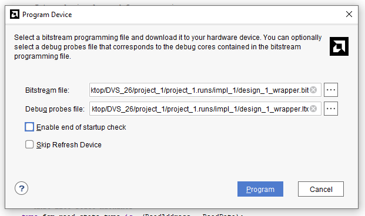
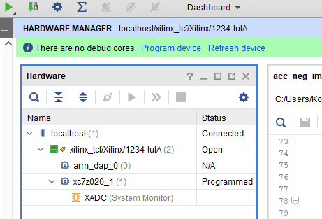

09. feb 2026.
Danas smo počeli izradu projekta. Konačno smo odradili LAB2 jer sko zaključili da nam je to pola posla. Dobar deo projekta
se svodi na LAB2.
Zajedno smo prosli svih 24 strane, doduše zbrzali smo deo sa primerima za filtere jer sko skontali da
je taj korak daleko od nas.
Imali smo problema sa ILA-om ponovo.
Dodavanjem nje u VHDL kood, preko mark-debug komandi, dobili smo debug_cores xsa fajl
ALI
Kad probamo da dodamo u Hardware manager, alat nam izbacuje grešku da nije uspeo da nadje debug cores.
U nastavku prilažem sliku na uvid kao dokaz. Verujem da je ILA jako bitan deo izrade VLSI sistema i voleo bih da naučimo da je koristimo
što pre.


U narednim danima počećemo sa izradom akceleratora, prvo osnovne potrebe a onda i bonuse.